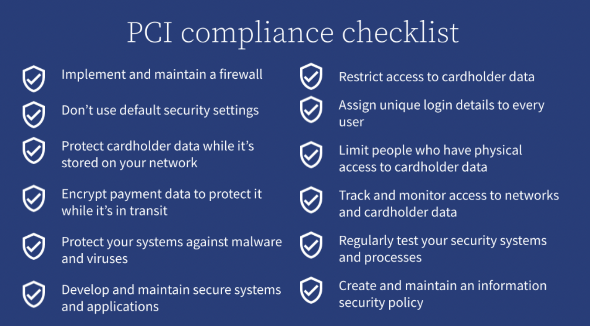

Changes in the last 5 years include: Compliance Rules, PCI / E Com regulation, tax/privacy/wallets. Web 3 emerging with real time API data resolving across multiple channels. GA4 and Data Compliance rules apply to real time Data Syncing.
The shape, update and scaling of data has changed radically in the past 5 years. Has your database, compliance, security for your Enterprise Organization kept up?
How do you future proof?
SSL Publishing
HTTPS (HyperText Transfer Protocol Secure) and SSL (Secure Sockets Layer) is now a must. "legacy" publishing for a single domain name hosted in a database linked CMS (Drupal, Wordpress, Site Core), will only be able to have a single certificate associated with a single domain.
Modern CMS (Netlify, Vercel, Contentful, Sanity, Webflow) publish SSL by default for free.
Drupal and Wordpress have RESTful endpoints that can support feeds that will publish to REST publishing. These REST based publishing (Gatsby, Gridsome, Svelte, 11ty, Astro) can sync and be designed to work in tandem with as is "traditional" CMS and Page/File system development.
360 Marketing Opportunities: Shoppable emails, Geo Fenced resource/segment referencing, Personalized Entitlement/Gated Content, Automated List Resource/Customer/Cart Tagging, will need "headless" architectures to be built in tandem with traditional services and functional program management.
PCI E Com Rules
E Com needs to be ADA Compliant. Penalties and regulations, include preventing storage of CSV files on Desktop Computers. A Solid system of data governance and real time moderation needs to be simple to use and immediately actionable.
If a customer requests to be removed from data tracking, a record process needs to have a clear documented workflow. Data that is sourced from CSV files, and personal desktop storage, is no longer viable, and will suffer from pretty severe regulatory penalties.
Importance of removing the CSV files of un synchronized data from multiple desktops is a critical path for modern data.
A singular database that is "Enterprise" needs to be supported with solid Real Time API data modeling on client and server functions, roles, composition, and updating. All Data on Client and Server must be synchronized in real time. API first adoption must be adopted. API to backend service logic is Front End / client side. Client / Server and middleware must align with existing on prem "database" and security.
Security rules that are more than 5 years old, might be an Enterprise Organization's biggest vulnerability. The very visible database, that is a clear target can be hardened with distributed unstructured API data storage, that cannot be broken with Single Point of Failure Vulnerability.
Use regular CSS/HTML/JS, to prototype. Webflow, Plasmic, Slice Machine, builder.io, Astro/11ty, exports paired with SSG "Server Rendered" dynamic backends: Sanity, Contentful, Prismic, gives you free to use infinitely scalable SSL secure development environments at no cost.
The reason Wordpress is approaching more than a third adoption for all sites is, because content stakeholder can edit and create new content/design without friction. In spite of a bulky and often insecure database, UI, deployment pairing.
Designing efficient fast loading easily maintained and secure work streams are an after thought. Sites and Databases are often not maintained.
Design Personalization, 3d Animation, Customization with Builders, Swatch Libraries, integrations to Inventory Management in real time, with shippable code.
Upload to real time deployment: Vercel, Netlify, Cloudflare, Github Pages. Utilize non breaking publishing that is secure and role moderated, to CDN to bespoke, Enterprise, Gated, Stand Alone Apps, Personalized Services, CRMs, and "Legacy" CMS. Build cloned UI/UX in Headless Workflows to parallel.
Organize Naming, Image Compression (source sets), ALT tags, ADA compliance and content in real time.
Use best case tools: Angular, Vue, React (Next, Gatsby, Native), Svelte, or just plain static, combinations of Frameworks/Libraries also work, per your use case. There is no privilege or "best" way to approach complex library builds/and compiles. Utilize, open source real time design tools. Unlimited previews and collaboration interaction optimize Design, Strategy and Revenue Generation. Unlimited variations and Data Models can be previewed privately and in public. Asset Optimization and updates are created with SEO/Tagging/Filtering built into page build process. Templates and Themes can be securely in real time, and published with Calendar/Targeting Events. Webhook can link UI/CSS/Templates/Authorization to secure APIs and Publish in Real Time Builds.
Build Personas and link via rich and clean APIs to segmentation and 360 conversion with easy to use tools.
